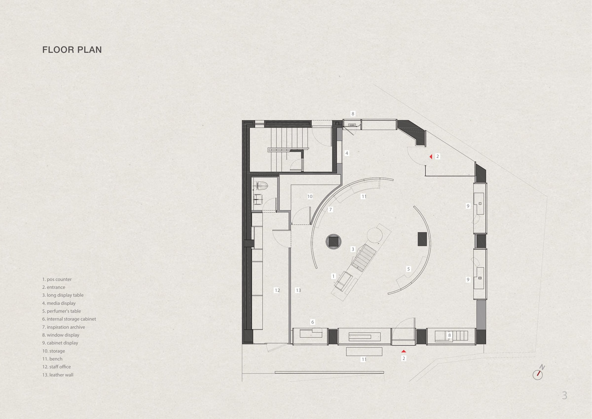
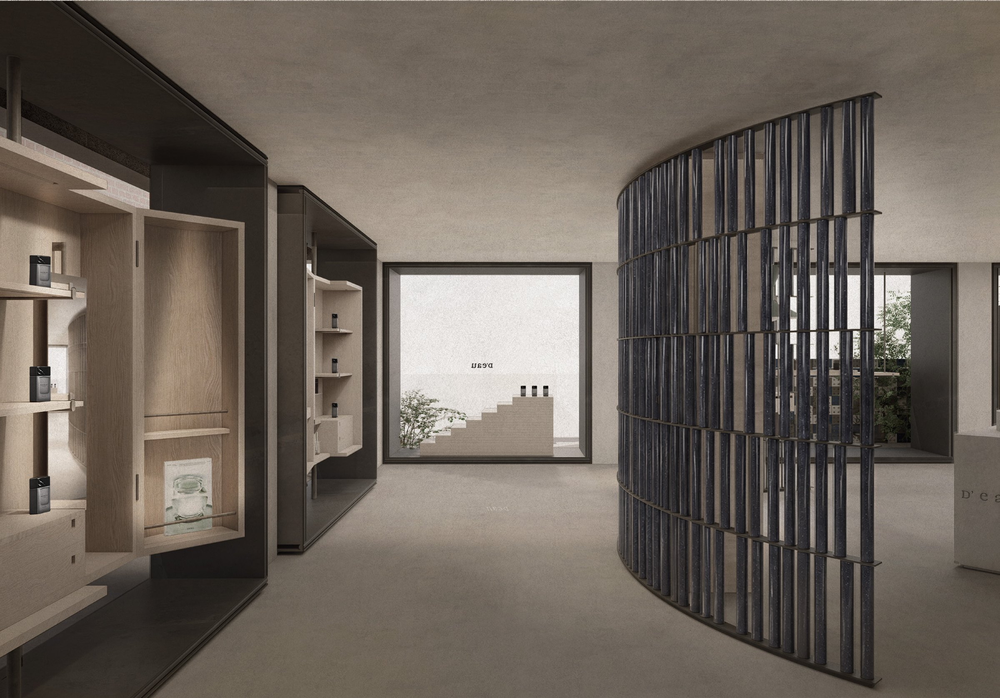
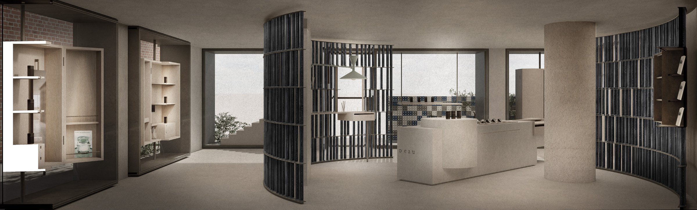
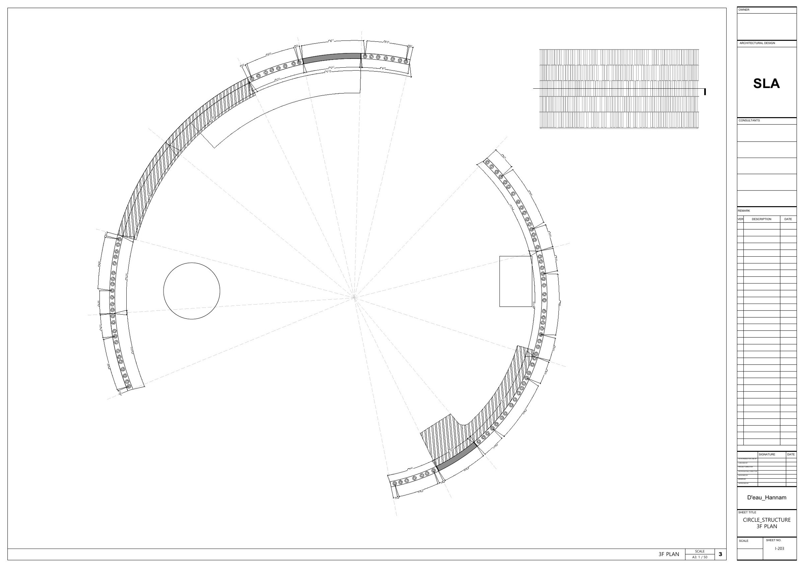
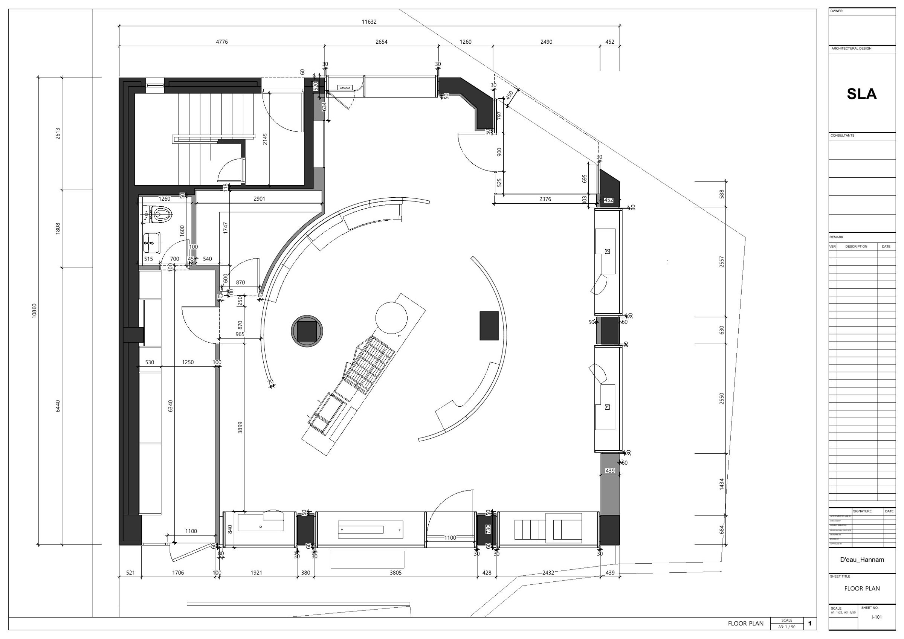

SLA · 인턴
D'EAU HANNAMThe Hearth — A Place of Gathering and Discovery
- Office
- SLA
- Period
- 2026.07–2026.11
- Project
- D'EAU 한남 플래그십 스토어
- Type
- 리테일 인테리어
- Role
- 인턴
모이고 발견하는 자리, 둥근 철재 루버 스크린
한남동 D'EAU 플래그십 스토어. 매장 가운데에 원형으로 휘어진 철재 루버 스크린을 세워, 그 안쪽을 사람들이 모이고 제품을 발견하는 '난로' 같은 중심으로 만들었다. 실시도면과 원형 구조물 상세, 현장까지 이어진 작업이다.




원형 스크린의 구조Circle structure
원을 여러 구간으로 나누고, 구간마다 수직 파이프 루버와 선반 모듈의 배치를 정리했다.




현장On site
도면이 현장에서 세워지는 과정.